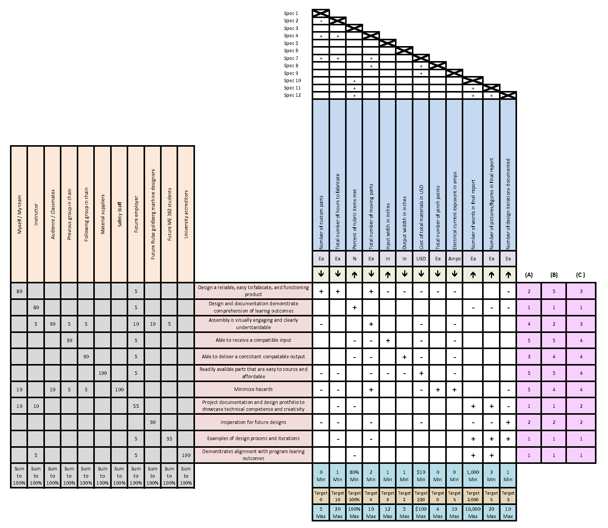

This portfolio documents the design process and development of a Rube Goldberg machine, a complex contraption that performs a simple task through a series of intricate steps. The project is structured into four main phases, each addressing specific aspects of the design process, from problem identification to final evaluation and reflection.
My Rube Goldberg section was designed to complete the task of converting rotational energy (from a previous phase fly wheel) into a stream of water. This Portfolio aims to demonstrate the application of engineering design principles, creativity, and technical skills used throughout the project.
The problem addressed by my section of the Rube Goldberg machine is the conversion of rotational energy from a previous phase flywheel into a stream of water.
Engineering specs were defined to set clear and measurable criteria for the design, ensuring the solution meets the functional requirements and stakeholder needs.
| Spec No. | Engineering Spec | Driving Direction | Min/Max/Target |
|---|---|---|---|
| 1 | Number of custom parts | Down | 0, 5, 0 |
| 2 | Total number of hours to fabricate | Down | 1, 30, 10 |
| 3 | Percent of rubric items met | Up | 80%, 100%, 100% |
| 4 | Input width in inches | Up | 1, 12, 8 |
| 5 | Output width in inches | Down | 1, 5, 2 |
| 6 | Total Cost of materials in USD | Down | 10, 100, 20 |
| 7 | Total number of pinch points | Down | 0, 4, 0 |
| 8 | Electrical current exposure in Amps | Down | 0, 10, 5 |
| 9 | Number of words in final report (Webpage) | Up | 1,000, 10,000, 2,000 |
| 10 | Number of pictures/figures in final report (Webpage) | Up | 3, 20, 5 |
| 11 | Number of design iterations documented | Up | 1, 10, 3 |
Table 1: Engineering Specifications
Stakeholders were identified using a three tier system including Primary, Secondary, and Tertiary stakeholders. Primary stakeholders are those who are directly affected by the problem and solution, secondary stakeholders have an indirect interest, and tertiary stakeholders have a broader societal or environmental interest. Each stakeholder group was analyzed to understand their needs, concerns, and potential impact on the project. The following list illistrates the three types of stakeholders with representations from each category and their needs.
Primary Stakeholders
1. Myself/ My team - Need to design a reliable, easy to fabricate, and functioning product.
2. Instructor - Needs the design and documentation to demonstrate comprehension of learning objectives.
3. Audience / Classmates- Need the assembly to be visually engaging and clearly understandable.
Secondary Stakeholders
1. Previous group in chain - Need to be able to receive a compatible input.
2. Following group in chain - Need to deliver a consistent compatible output.
3. Material suppliers - Readily available parts that are easy to source and affordable.
4. Safety staff - Need the project to minimize hazards.
Tertiary Stakeholders
1. Future employer - Need the project documentation and design portfolio to showcase technical competence and creativity.
2. Future Rube Goldberg machine designers - Need Inspiration for future designs.
3. Future ME 382 students - Need examples of the design process and iterations.
4. University accreditors - Need the project to demonstrate alignment with program learning outcomes.
Based on the analysis of stakeholders and the engineering specs, the following house of quality was established for my section of the Rube Goldberg machine:
Figure 1: House of Quality